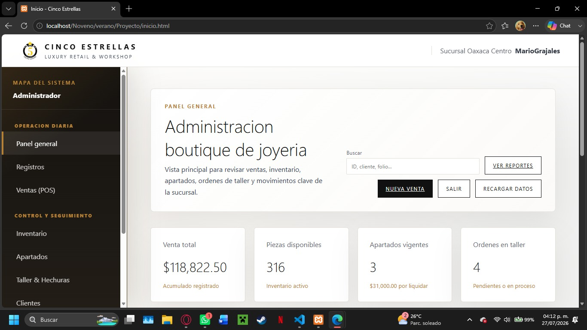
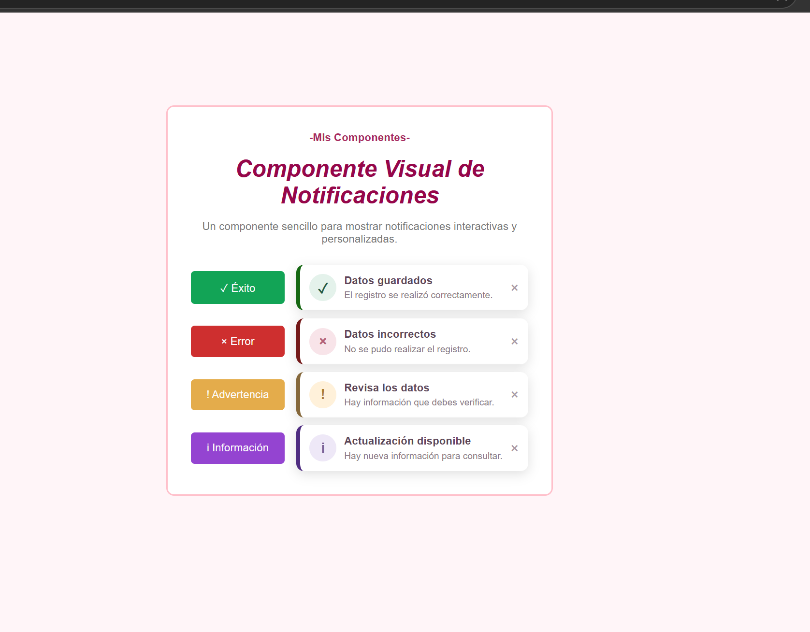
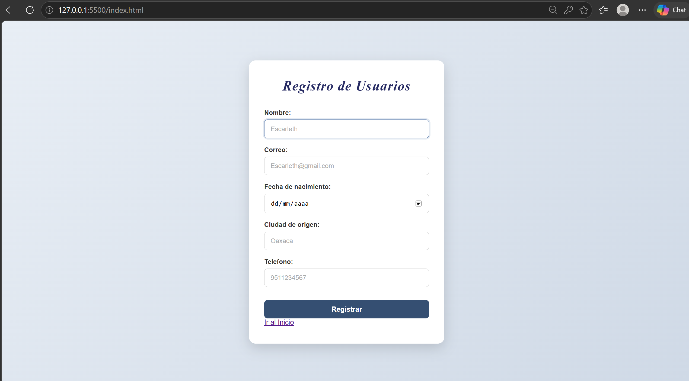
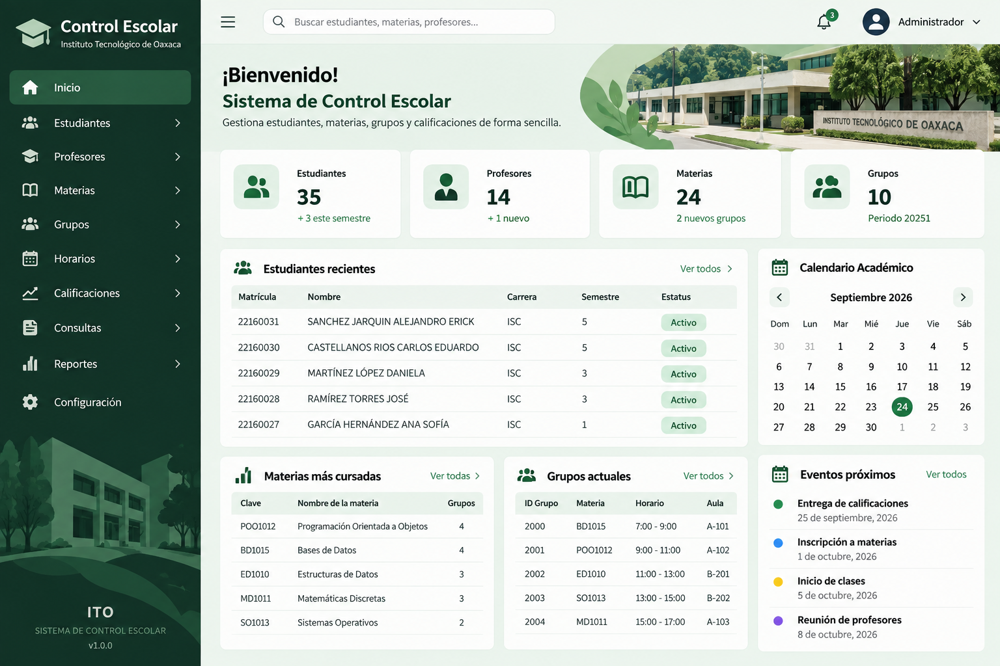
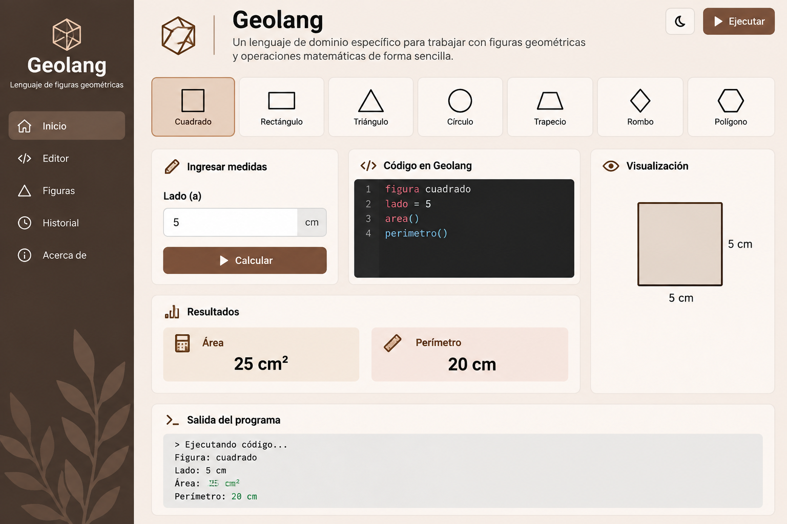
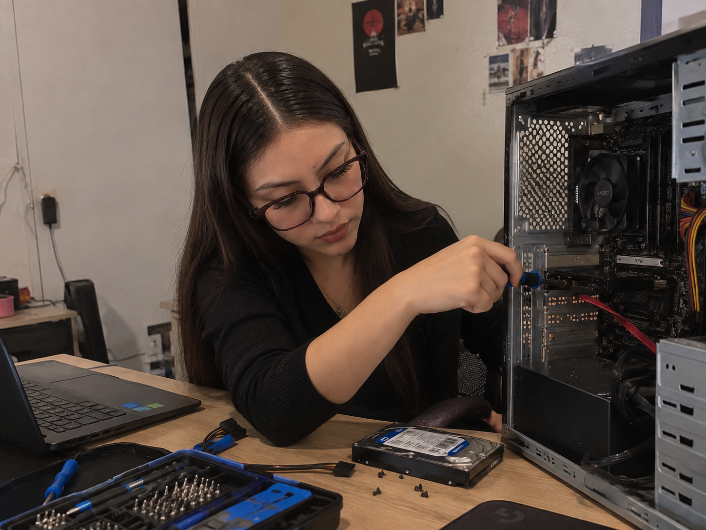

Mi Portafolio
Algunas de las áreas que he trabajado durante mi carrera.
Tengo conocimientos en HTML, CSS y JavaScript para desarrollar páginas web e interfaces funcionales.
He trabajado con PostgreSQL y pgAdmin, creando tablas, relaciones y diferentes consultas SQL.
He realizado proyectos y prácticas utilizando Java, C, C++, JavaScript y PHP.
Mantenimiento preventivo y correctivo de computadoras, instalación de sistemas operativos y diagnóstico de fallas.
Actualmente
Instituto Tecnológico de Oaxaca
Técnico en Soporte y Mantenimiento de Equipo de Cómputo
CBTis No. XX
Durante mi carrera he adquirido conocimientos sobre programación, bases de datos, desarrollo web, redes e ingeniería de software.
Proyectos académicos
He desarrollado proyectos utilizando HTML, CSS, JavaScript, PHP, Java y PostgreSQL.
Durante mi formación en el CBTis realicé mantenimiento preventivo y correctivo de equipos de cómputo, instalación y configuración de sistemas operativos, ensamblaje de computadoras, configuración básica de redes y diagnóstico de fallas de hardware y software.
He realizado diferentes prácticas relacionadas con programación, desarrollo web y administración de bases de datos.
Me interesa seguir aprendiendo sobre desarrollo de páginas y aplicaciones web.
Me gusta aprender nuevas herramientas y tecnologías que me ayuden a mejorar mis habilidades profesionales.
Soy estudiante de Ingeniería en Sistemas Computacionales en el Instituto Tecnológico de Oaxaca.
Cursé el bachillerato técnico en Soporte y Mantenimiento de Equipo de Cómputo en el CBTis, donde adquirí mis primeras bases prácticas en hardware, software y redes, y desde entonces me ha gustado resolver problemas técnicos.
Durante mi carrera he desarrollado diferentes proyectos relacionados con programación, desarrollo web, bases de datos e ingeniería de software.
Me interesa seguir aprendiendo y mejorar mis habilidades en el área de tecnología. Mi objetivo es adquirir más experiencia y conocimientos que me permitan crecer profesionalmente.
Los utilizo para desarrollar páginas web, interfaces y diferentes ejercicios de programación web.
Los utilizo para crear y administrar bases de datos, realizar consultas SQL y trabajar con relaciones entre tablas.
Son lenguajes que he utilizado durante diferentes materias y prácticas de mi carrera.
Algunos proyectos y prácticas que he realizado durante mi formación en Ingeniería en Sistemas Computacionales.

Sistema desarrollado como proyecto académico utilizando HTML, CSS, JavaScript, PHP y PostgreSQL.

Componente visual de notificaciones tipo Toast desarrollado utilizando JavaScript y CSS.

Librería desarrollada con JavaScript para realizar validaciones de formularios, contraseñas, correos y otros datos.

Base de datos desarrollada en PostgreSQL donde realicé consultas, subconsultas y operaciones de conjunto.

Propuesta de un lenguaje de dominio específico orientado a figuras geométricas y operaciones matemáticas.

Prácticas de limpieza, diagnóstico, reparación, instalación de sistemas operativos y configuración de redes en equipos de cómputo.